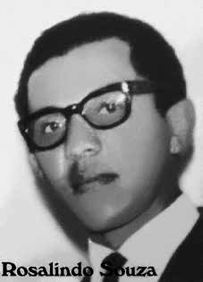

Rosalindo
Sousa
CIRCUNSTÂNCIAS DA MORTE
No Relatório Arroyo, consta que ele morreu ao final da segunda campanha, no mês de setembro de 1973, por conta de um acidente com a arma que portava. E o Relatório do Ministério da Marinha entregue ao ministro da Justiça Maurício Corrêa, em 1993, aponta a morte do guerrilheiro em setembro de 1993, havendo um possível erro de datilografia no que diz respeito ao ano. Já o Diário de Maurício Grabois registra a morte de Mundico no dia 16 de agosto de 1973 e não estabelece como certo o acidente com a arma, apesar de indicá-lo como uma hipótese provável.
Este documento assinala, também, que seu corpo foi encontrado na mata, próximo a casa de um camponês e que havia sido enterrado perto desse lugar, recebendo homenagens de seus companheiros. Mesmo concordando com a data de morte assentada pelo Diário de Maurício Grabois, o Relatório do Ministério do Exército, de 1993, traz uma nova versão para o ocorrido, afirmando que a morte de Rosalindo se deu em combate com forças de segurança.
O Ministério da Aeronáutica, em relatório entregue na mesma ocasião, faz referência a outras fontes que confirmam a morte do guerrilheiro mas não elucidam a data ou o desenrolar dos fatos que culminaram na morte de Mundico. Entre elas está documento do Comitê Brasileiro pela Anistia, datado de novembro de 1979 e declaração de José Genoíno (na época, deputado federal), publicada pela Folha de São Paulo de 26 de junho de 1978. Na contramão das informações anteriores, o ex-guia do Exército Sinésio Martins Ribeiro declarou ao Ministério Público Federal (MPF), em 2001, que – quando ainda estava preso na base de Xambioá durante agosto ou setembro – viu a cabeça de Rosalindo.
Sinésio sustenta que os guerrilheiros teriam matado Mundico e que a sepultura, localizada nas terras de um outro regional referido apenas como João do Buraco, foi mostrada por este aos militares ao ser preso. Dias depois, a sepultura foi cavada e os militares cortaram a cabeça e enterraram novamente o corpo. Segundo o depoimento, a cabeça foi levada para a base, mostrada aos presos para reconhecimento e deixada exposta, por alguns dias, perto do barracão do Exército antes de ser enterrada novamente.
Por fim, há uma versão publicada pelo jornal Estadão, em artigo de Leonencio Nossa, de 21 de setembro de 2014, na qual um ex-guia do Exército alega ter matado Rosalindo. Olímpio Pereira, afirma que o guerrilheiro teria matado um amigo seu – João Pereira – em 1972. E que, em setembro de 1973, com a indicação da localização de Mundico feita por irmãos de João, seguiu-o pela mata, encontrando-o no casebre de um morador chamado João do Buraco. Ele relata que disparou apenas um tiro, à espreita, matando-o.
The Arroyo Report states that he died at the end of the second campaign, in September 1973, due to an accident with the weapon he was carrying. And the Report from the Ministry of the Navy delivered to the Minister of Justice Maurício Corrêa, in 1993, indicates the death of the guerrilla in September 1993, with a possible typing error regarding the year. The Diary of Maurício Grabois records Mundico's death on August 16, 1973 and does not establish the accident with the weapon as certain, despite indicating it as a probable hypothesis.
This document also indicates that his body was found in the woods, close to a peasant's house and that he had been buried near that place, receiving tributes from his companions. Even agreeing with the date of death established by Maurício Grabois' Diary, the 1993 Ministry of the Army Report brings a new version of what happened, stating that Rosalindo's death occurred in combat with security forces.
The Ministry of Aeronautics, in a report delivered on the same occasion, refers to other sources that confirm the guerrilla's death but do not elucidate the date or development of the events that culminated in Mundico's death. Among them is a document from the Brazilian Committee for Amnesty, dated November 1979 and a statement by José Genoíno (at the time, federal deputy), published by Folha de São Paulo on June 26, 1978. Contrary to previous information, former Army guide Sinésio Martins Ribeiro declared to the Federal Public Ministry (MPF), in 2001, that – when he was still imprisoned at the Xambioá base during August or September – he saw the head of Rosalindo.
Sinésio maintains that the guerrillas killed Mundico and that the grave, located on the land of another regional man referred to only as João do Buraco, was shown by him to the military when he was arrested. Days later, the grave was dug and the soldiers cut off the head and reburied the body. According to the testimony, the head was taken to the base, shown to prisoners for recognition and left exposed for a few days near the Army barracks before being buried again.
Finally, there is a version published by the newspaper Estadão, in an article by Leonencio Nossa, dated September 21, 2014, in which a former Army guide claims to have killed Rosalindo. Olímpio Pereira, states that the guerrilla had killed a friend of his – João Pereira – in 1972. And that, in September 1973, with the indication of Mundico's location made by João's brothers, he followed him through the forest, finding him in the hut of a resident called João do Buraco. He reports that he fired just one shot, lying in wait, killing him.
El Informe Arroyo afirma que murió al final de la segunda campaña, en septiembre de 1973, a causa de un accidente con el arma que portaba. Y el Informe del Ministerio de Marina entregado al Ministro de Justicia Maurício Corrêa, en 1993, indica la muerte del guerrillero en septiembre de 1993, con un posible error tipográfico en cuanto al año. El Diario de Maurício Grabois registra la muerte de Mundico el 16 de agosto de 1973 y no establece como seguro el accidente con el arma, aunque lo señala como una hipótesis probable.
Este documento también indica que su cuerpo fue encontrado en el bosque, cerca de la casa de un campesino y que había sido enterrado cerca de ese lugar, recibiendo homenajes de sus compañeros. Aun coincidiendo con la fecha de muerte establecida por el Diario de Maurício Grabois, el Informe del Ministerio del Ejército de 1993 trae una nueva versión de lo sucedido, afirmando que la muerte de Rosalindo se produjo en combate con las fuerzas de seguridad.
El Ministerio de Aeronáutica, en un informe entregado en la misma ocasión, refiere otras fuentes que confirman la muerte del guerrillero pero no aclaran la fecha ni el desarrollo de los hechos que culminaron con la muerte de Mundico. Entre ellos se encuentra un documento del Comité Brasileño de Amnistía, fechado en noviembre de 1979, y una declaración de José Genoíno (entonces diputado federal), publicada por Folha de São Paulo el 26 de junio de 1978. Contrariamente a informaciones anteriores, el ex guía del Ejército Sinésio Martins Ribeiro declaró al Ministerio Público Federal (MPF), en 2001, que – cuando todavía estaba preso en la base de Xambioá, en agosto o septiembre – vio la cabeza de Rosalindo.
Sinésio sostiene que los guerrilleros mataron a Mundico y que la tumba, ubicada en las tierras de otro regional al que se hace referencia únicamente como João do Buraco, fue mostrada por él a los militares cuando fue arrestado. Días después, cavaron la tumba y los soldados le cortaron la cabeza y volvieron a enterrar el cuerpo. Según el testimonio, la cabeza fue llevada a la base, mostrada a los prisioneros para su reconocimiento y dejada expuesta durante unos días cerca del cuartel del Ejército antes de ser enterrada nuevamente.
Finalmente, existe una versión publicada por el diario Estadão, en un artículo de Leonencio Nossa, del 21 de septiembre de 2014, en el que un ex guía del Ejército afirma haber asesinado a Rosalindo. Olímpio Pereira, afirma que la guerrilla había matado a un amigo suyo – João Pereira – en 1972. Y que, en septiembre de 1973, con la indicación de la localización de Mundico hecha por los hermanos de João, lo siguió a través del bosque, encontrándolo en la choza de un vecino llamado João do Buraco. Informa que disparó solo un tiro, al acecho, matándolo.